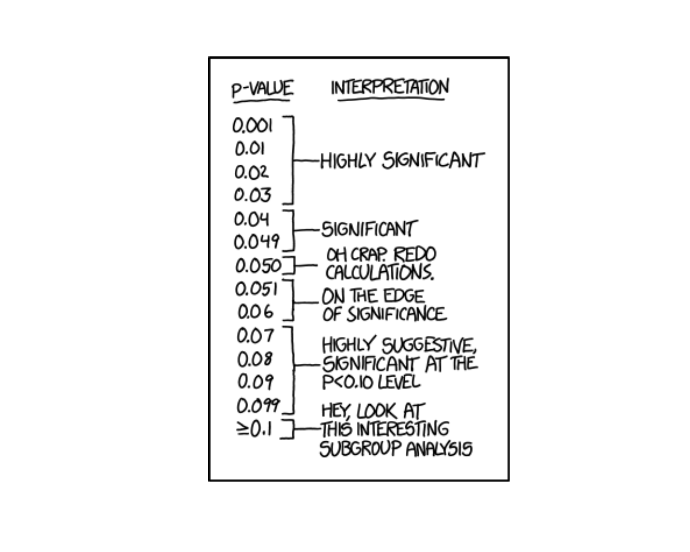
Lesson 35: ANOVA I

The Project: Where You Should Be
The Project Peer Review due Lesson 36 – Come in to class with your 85% solution. Every person brings in 3 copies.
ImportantProject Links
| Resource | Link |
|---|---|
| Project Instructions | Course Project Instructions (PDF) |
| Project Groups / Pairs | Project Pairs |
| Presentation Template | MA206X West Point Template (.pptx) |
| Army Vantage | Vantage Workspace |
Example Write-Up: Sections 3.1 – 3.3
Below is the level of writing and analysis I expect on the project. The example uses simulated data for a fictional 2nd BCT, 10th Mountain Division (not your real brigade). Use it as a template for tone, structure, depth, and how to weave R output into narrative – not as content to copy.
3.1 Executive Summary
BLUF. 2nd BCT’s mean AFT score is statistically indistinguishable from the 360-point promotion standard, but roughly one in three Soldiers still scores below 360. Targeted remediation at the individual level – not brigade-wide PT – is the highest-leverage intervention.
Methods. We analyzed 592 individual Soldier records from Army Vantage (JAN – MAR 2026) after data cleaning. We ran a one-sample \(t\)-test against the 360 promotion standard, a two-sample \(t\)-test comparing Combat Arms vs. Combat Support AFT totals, and a multiple linear regression predicting AFT total score from time in service, body-fat percent, billet, and M4 score.
Key results.
- Brigade mean AFT does not differ from the 360 standard at \(\alpha = 0.05\).
- Combat Arms outscore Combat Support on the AFT by a meaningful margin (\(p < 0.001\)).
- Body-fat percent and time in service are the strongest predictors of AFT performance.
- Roughly 31% of Soldiers are below the 360 standard despite the brigade average clearing it.
Recommendation. Shift remediation resources from blanket unit PT to a body-composition-focused program for the below-360 cohort, prioritizing Combat Support companies.
3.2 Introduction
Problem statement. The brigade commander must decide how to allocate limited training time to maximize lethality. Brigade-level pass rates alone obscure who is at risk and why.
Objectives. (1) Determine whether mean brigade AFT performance meets the 360 promotion standard. (2) Identify subgroups with performance gaps. (3) Quantify which Soldier-level factors drive AFT performance.
Scope. 2nd BCT, 10th Mountain Division; data pulled from Army Vantage covering JAN – MAR 2026; starting roster of 612 Soldiers across 3 battalions.
Variable summary.
| Variable | Type | Description |
|---|---|---|
aft_score_total |
Numeric (0–500) | Total AFT score (response of interest) |
billet |
Categorical | Combat Arms vs. Combat Support |
tis_years |
Numeric | Years on active duty |
age_bracket |
Categorical | 18–25, 26–30, 31–35, 36+ |
body_fat |
Numeric | Tape-test estimate (%) |
m4_score |
Numeric (0–40) | M4 qualification score |
Data cleaning. We dropped records missing aft_score_total and records with body_fat outside [3%, 40%] (sensor/entry errors). No imputation was performed. Final analytic sample: \(n = 592\).
Descriptive statistics (key variables).
| Variable | Mean (SD) |
|---|---|
| AFT total | 392.1 (43.9) |
| TIS (yr) | 6.1 (4.2) |
| Body fat (%) | 19.3 (4.9) |
| M4 score | 31.2 (3.9) |
3.3 One-Sample Hypothesis Test
Question. Does 2nd BCT’s mean AFT score differ from the Army promotion standard of 360?
1. Exploratory Data Analysis.
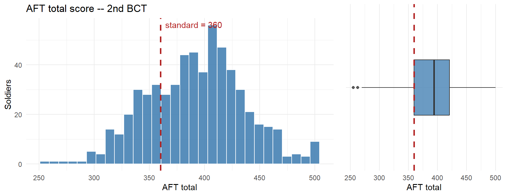
| n | Mean | SD | Median | % below 360 |
|---|---|---|---|---|
| 592 | 392.1 | 43.9 | 394 | 24.0% |
Observation: The distribution is roughly symmetric with a slight left tail. The brigade mean sits just above the standard, but nearly a third of the force is below it. The mean alone hides a substantial at-risk tail.
2. Methodology.
- \(H_0:\ \mu = 360\)
- \(H_a:\ \mu \ne 360\)
- Procedure: one-sample \(t\)-test, two-sided.
- Significance level: \(\alpha = 0.05\).
- Assumptions:
- Independence: Soldiers are distinct records; reasonable.
- Normality: \(n = 592 \gg 30\), so CLT covers any mild non-normality seen in the EDA.
- Representative sample: Data are the full brigade roster for the window; we treat them as a sample of the brigade’s underlying performance process.
3. Results.
One Sample t-test
data: bde_clean$aft_score_total
t = 17.758, df = 591, p-value < 0.00000000000000022
alternative hypothesis: true mean is not equal to 360
95 percent confidence interval:
388.5150 395.6066
sample estimates:
mean of x
392.0608 - Test statistic: \(t = 17.76\) on \(591\) df.
- p-value: \(0\).
- 95% CI for \(\mu\): \([388.5,\ 395.6]\).
- Effect size: Cohen’s \(d = 0.73\) – negligible.
- Decision: \(p = 0 < 0.05\), so we reject \(H_0\).
Interpretation. We do not have evidence that the brigade’s mean AFT score differs from the 360 promotion standard. Operationally, this is a mixed result: on average, 2nd BCT meets the standard, but the confidence interval straddles 360 and about a third of individual Soldiers still fail to clear it. Relying on the brigade mean would mask a real readiness problem at the Soldier level – the mean is a summary, not a roster. The one-sample test answers “is the average Soldier at standard?” but the commander’s real question is “how many Soldiers are not?” – which the two-sample and regression analyses in §3.4 and §3.5 address.
What We Did: Lessons 28, 30, 31, 32, 33
NoteLesson 28: Simple Linear Regression I
- Least squares fits \(\hat{y} = b_0 + b_1 x\) by minimizing \(\sum(y_i - \hat{y}_i)^2\)
- \(R^2\) = fraction of variability in \(y\) explained
- Decompose variability: SST = SSR + SSE
NoteLesson 30: Simple Linear Regression II
- Test the slope with \(t = b_1 / SE(b_1)\)
- Prediction vs. mean-response intervals
- Residual and QQ plots to assess adequacy
NoteLesson 31: Multiple Linear Regression I
- Interpret each slope holding other variables constant
- LINE assumptions: Linearity, Independence, Normality, Equal variance
- Adjusted \(R^2\) and multicollinearity
NoteLesson 32: Multiple Linear Regression II
- Categorical predictors via indicator variables with a reference level
- Identify and control for confounders
NoteLesson 33: Multiple Linear Regression III
- Interaction terms: effect of one predictor depends on another
- Distinguish main effects from interaction effects
What We’re Doing: Lesson 35
Objectives
- State ANOVA assumptions and hypotheses
- Compute the \(F\)-statistic from sums of squares
- Conduct one-way ANOVA tests
- Report differences with CIs and effect sizes
Required Reading
Devore, Section 10.1
Break!
The Kids
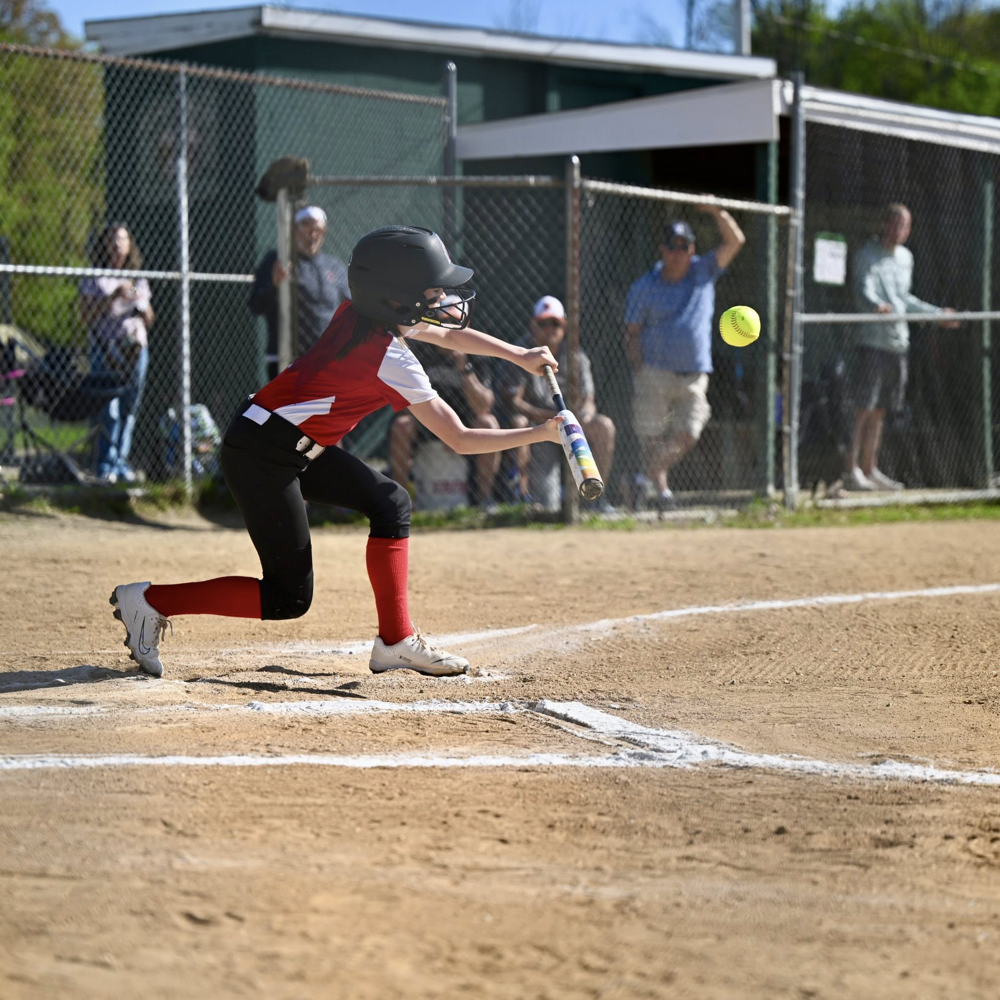
In Memoriam: CPT Tim Cunningham
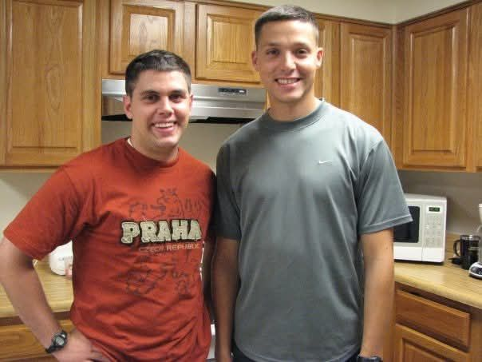
A moment to remember CPT Tim Cunningham.
Listen / read: Soldiers Try to Cope with Battlefield Losses – NPR (2008)
The Takeaway for Today
ImportantOne-Way ANOVA Key Ideas
- Goal: compare means across \(k \ge 3\) groups
- Hypotheses:
- \(H_0: \mu_1 = \mu_2 = \cdots = \mu_k\)
- \(H_a:\) at least one \(\mu_i\) differs
- Test statistic: \(F = \dfrac{MSTr}{MSE}\)
- Reject \(H_0\) when \(F\) is large (variation between groups exceeds variation within groups)
Motivating ANOVA: What If We Want a Lot of Pairwise Comparisons?
Start Simple: Two Companies
Suppose for your project you want to compare AFT scores (max 500) between two companies in a battalion – say A Co and B Co. Easy: two-sample t-test, done. One test, one p-value, one \(\alpha\).
head(A)[1] 307.5771 334.6212 369.6961 301.7406 327.9937 333.3105head(B)[1] 298.7073 371.9309 345.0860 379.8051 367.2409 378.4735First, look at the data:
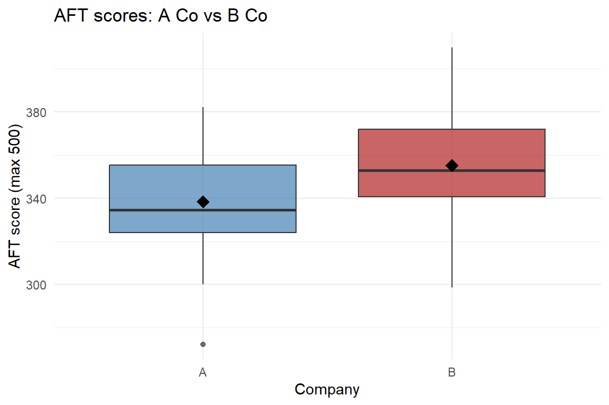
B Co sits a bit higher than A Co. Is the gap big enough to be real? Run the test:
t.test(A, B, alternative = "two.sided", mu = 0, conf.level = .95, paired = FALSE)
Welch Two Sample t-test
data: A and B
t = -2.1372, df = 47.799, p-value = 0.03773
alternative hypothesis: true difference in means is not equal to 0
95 percent confidence interval:
-32.5258433 -0.9905815
sample estimates:
mean of x mean of y
338.3493 355.1076 The p-value is below \(0.05\), so we reject \(H_0\) – A Co and B Co really do differ. Clean result.
Now Add More Companies
But a battalion has A, B, C, and HHC. We want to know: “do any companies differ in average AFT score?”
How many pairwise comparisons is that?
\[ \binom{4}{2} = \frac{4 \cdot 3}{2} = 6 \text{ tests} \]
A vs B, A vs C, A vs HHC, B vs C, B vs HHC, C vs HHC.
Look at all four:
# A tibble: 8 × 2
# Groups: company [4]
score company
<dbl> <fct>
1 375. A
2 308. A
3 341. B
4 372. B
5 336. C
6 354. C
7 358. HHC
8 338. HHC 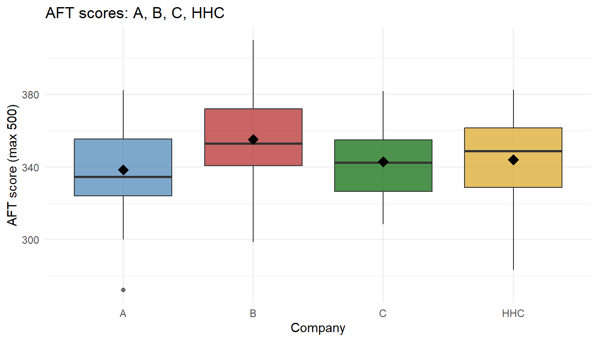
Some companies look different, others look similar – but our eyes are unreliable with this much overlap. Let’s run all six pairwise t-tests:
| Comparison | Mean 1 | Mean 2 | Difference | p-value | Decision |
|---|---|---|---|---|---|
| A vs B | 338.3 | 355.1 | -16.8 | 0.0377 | Reject H0 (significant) |
| A vs C | 338.3 | 342.8 | -4.4 | 0.5246 | Fail to reject |
| A vs HHC | 338.3 | 344.0 | -5.7 | 0.4503 | Fail to reject |
| B vs C | 355.1 | 342.8 | 12.3 | 0.0690 | Fail to reject |
| B vs HHC | 355.1 | 344.0 | 11.1 | 0.1293 | Fail to reject |
| C vs HHC | 342.8 | 344.0 | -1.2 | 0.8407 | Fail to reject |
Some pairs come back significant, others don’t. Each individual test was run at \(\alpha = 0.05\) – but we just ran six of them.
What Is \(\alpha\), Really?
When we run one test at \(\alpha = 0.05\), we’re saying:
“If \(H_0\) is true, I’m willing to accept a 5% chance of a false positive – concluding the means differ when they really don’t.”
That’s fine for one test. But we just ran six.
The Problem: False Positives Pile Up
If all 6 null hypotheses are true, and each test independently has a 5% chance of a false positive, the probability of at least one false positive across the family is:
\[ P(\text{at least one false positive}) = 1 - (1 - \alpha)^m = 1 - 0.95^6 \approx 0.265 \]
So with 4 companies and 6 pairwise tests at \(\alpha = 0.05\), there’s roughly a 26.5% chance we’ll claim somewhere that two companies differ – even if they are all identical.
WarningThis Is the Multiple Comparisons Problem
Run enough tests and you will find “significance” by pure chance. Your stated \(\alpha\) per test is not your real \(\alpha\) for the whole question.
How Do We Fix It?
One simple fix: use a stricter threshold on each test. If we want the family-wise false-positive rate to stay at 5%, we shrink each test’s \(\alpha\). The Bonferroni correction divides by the number of tests:
\[ \alpha^* = \frac{\alpha}{m} = \frac{0.05}{6} \approx 0.0083 \]
Now each pairwise test must clear a much smaller p-value to be called significant. Let’s redo the table with the corrected threshold:
| Comparison | Mean 1 | Mean 2 | Difference | p-value | Decision (α* = 0.0083) |
|---|---|---|---|---|---|
| A vs B | 338.3 | 355.1 | -16.8 | 0.0377 | Fail to reject |
| A vs C | 338.3 | 342.8 | -4.4 | 0.5246 | Fail to reject |
| A vs HHC | 338.3 | 344.0 | -5.7 | 0.4503 | Fail to reject |
| B vs C | 355.1 | 342.8 | 12.3 | 0.0690 | Fail to reject |
| B vs HHC | 355.1 | 344.0 | 11.1 | 0.1293 | Fail to reject |
| C vs HHC | 342.8 | 344.0 | -1.2 | 0.8407 | Fail to reject |
Now nothing is significant. Bonferroni controls the family-wise error rate, but the cost is obvious: it is very conservative – we may miss real differences that a single pre-planned t-test would have caught.
A Different Approach: One Big Question
Instead of running many small tests and patching up the error rate, we can ask one big question with a single test at level \(\alpha\):
“Are any of the group means different?”
That single test is ANOVA.
Building Intuition: What Does “Different Means” Look Like?
Before any math, let’s just look at group data. Here are four companies (A, B, C, HHC) and their AFT scores. In all four panels the group means are identical – it’s the within-group spread that changes.
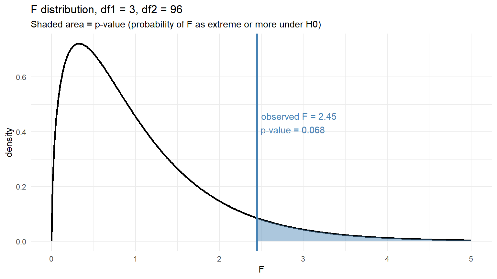
Same means, wildly different conclusions. When within-group spread is tiny (left), even a small gap between group means looks meaningful. When within-group spread is huge (right), the same gap vanishes into noise.
Now flip it: keep the within-group spread fixed and move the means around.
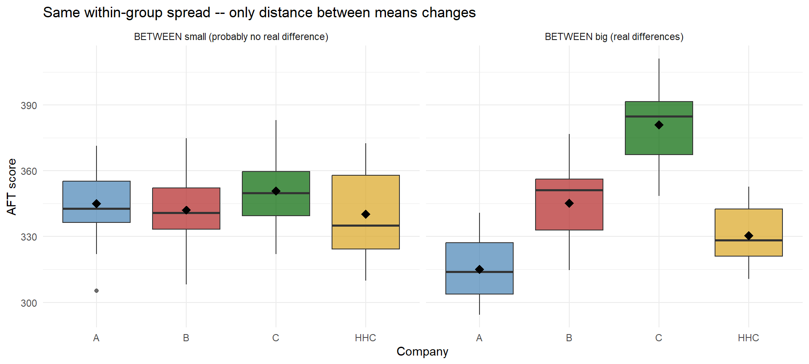
The punchline: whether the groups really differ depends on both how far apart the group means are and how noisy each group is. Next we need a way to quantify both.
Building ANOVA from the AFT Data
Here’s the boxplot we had from the motivation – the four companies’ AFT scores:
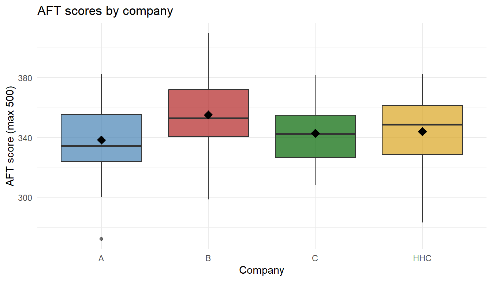
We need a way to mathematically codify this concept – specifically, to measure the two sources of variability at work here:
- A measure of between-group variability – how spread out the group means are
- A measure of within-group variability – how noisy each group is internally
Once we have both, we’ll combine them into a single ratio. Let’s build each one from scratch.
A bit of notation we’ll use:
- \(k\) = number of groups; \(n_i\) = sample size in group \(i\); \(N = \sum n_i\) = total
- \(\bar{x}_i\) = sample mean of group \(i\); \(\bar{x}\) = grand mean (mean of all data)
For our AFT data:
\[ k = 4, \qquad N = 100, \qquad \bar{x} = 345.07 \]
\[ \bar{x}_A = 338.35, \quad \bar{x}_B = 355.11, \quad \bar{x}_C = 342.78, \quad \bar{x}_{HHC} = 344.02 \]
Measuring Between-Group Variability
We want a number that’s big when the group means are spread out and small when they’re all close to the grand mean. The sum of squares between (a.k.a. sum of squares treatment) does that:
\[ SSTr = \sum_{i=1}^{k} n_i \,(\bar{x}_i - \bar{x})^2 \]
And the mean square between just divides by its degrees of freedom:
\[ MSTr = \frac{SSTr}{k - 1} \]
SSTr <- sum(group_n * (group_means - grand_mean)^2)
MSTr <- SSTr / (k - 1)Plugging in:
\[ SSTr = 25(338.35 - 345.07)^2 + 25(355.11 - 345.07)^2 + 25(342.78 - 345.07)^2 + 25(344.02 - 345.07)^2 = 3806.41 \]
\[ MSTr = \frac{SSTr}{k-1} = \frac{3806.41}{3} = 1268.8 \]
Measuring Within-Group Variability
Now a number for how noisy each group is. The sum of squares error sums every observation’s squared distance from its own group mean:
\[ SSE = \sum_{i=1}^{k} \sum_{j=1}^{n_i} (x_{ij} - \bar{x}_i)^2 \]
And the mean square error divides by its degrees of freedom:
\[ MSE = \frac{SSE}{N - k} \]
SSE <- sum((scores$score - group_means[scores$company])^2)
MSE <- SSE / (N - k)\[ SSE = 5.955859\times 10^{4} \qquad\qquad MSE = \frac{5.955859\times 10^{4}}{96} = 620.4 \]
The Ratio
Combine them into a single signal-to-noise number:
\[ F = \frac{MSTr}{MSE} = \frac{\text{between-group variability}}{\text{within-group variability}} \]
F_stat <- MSTr / MSE\[ F = \frac{1268.8}{620.4} = 2.045 \]
Stop and Think
What does this ratio tell us?
- If the ratio is near 1, the between-group spread is about the same as the within-group noise. The gaps between company means look like ordinary random variation – consistent with all groups being the same.
- If the ratio is much bigger than 1, the between-group spread is larger than ordinary noise can produce. That’s evidence the means are actually different.
So our decision depends on where our \(F\) value falls on a sliding scale: small → same, big → different.
TipWait… this sounds like a hypothesis test.
It does, because it is. We can write the question formally:
- \(H_0\): \(\mu_A = \mu_B = \mu_C = \mu_{HHC}\) (all company means are the same)
- \(H_a\): at least one mean differs
- Test statistic: \(F = MSTr / MSE\), small under \(H_0\) and large under \(H_a\)
The only thing left: how big does \(F\) have to be before we call it “big”?
How Big Is Big Enough? The F Distribution
Under \(H_0\) (all group means equal), the ratio \(F = MSTr/MSE\) follows an F distribution with \(k-1\) numerator df (between) and \(N-k\) denominator df (within):
\[ F \;\sim\; F_{\,k-1,\; N-k} \qquad\text{when } H_0 \text{ is true} \]
For our AFT data: \(k - 1 = 3\) and \(N - k = 96\). Plot the null distribution and mark our observed \(F\):
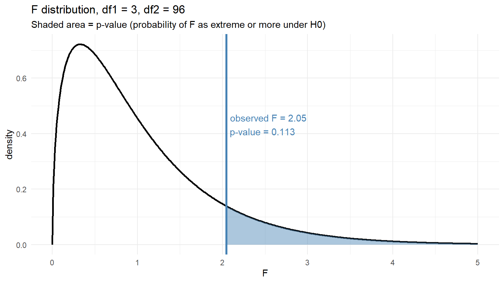
- Blue line = our observed \(F\)
- Blue shaded area = the p-value – the probability under \(H_0\) of getting an \(F\) at least as extreme as ours
Our Conclusion on the AFT Data
If the shaded area (the p-value) is smaller than \(\alpha = 0.05\), we reject \(H_0\) and conclude that at least one company mean differs from the others. If not, we fail to reject – the data don’t give us enough evidence to say any company mean is different.
ANOVA tells us that a difference exists, not which pair. Multiple-comparison procedures (Tukey HSD, Lesson 38) pick up from there.
Doing This in R with aov()
You don’t have to compute any of this by hand. R’s aov() builds the whole ANOVA table from a formula outcome ~ group.
Step 1: fit the model. The formula reads “score as a function of company,” and data = scores tells R which dataframe to pull the columns from.
fit_aov <- aov(score ~ company, data = scores)Step 2: look at the ANOVA table with summary():
summary(fit_aov) Df Sum Sq Mean Sq F value Pr(>F)
company 3 3806 1268.8 2.045 0.113
Residuals 96 59559 620.4 Match the output to what we just did by hand:
aov() column |
What it is | Our hand value |
|---|---|---|
Df |
degrees of freedom | \(k-1 = 3\) and \(N-k = 96\) |
Sum Sq |
sum of squares | \(SSTr\) and \(SSE\) |
Mean Sq |
mean squares | \(MSTr\) and \(MSE\) |
F value |
the F-statistic | \(MSTr / MSE\) |
Pr(>F) |
the p-value | shaded area on our F plot |
If you want just the p-value for a calculation, pull it out directly:
anova_summary <- summary(fit_aov)
anova_summary[[1]]$`Pr(>F)`[1][1] 0.1126863Assumptions (check these before trusting the F-test)
WarningANOVA Assumptions
- Independent observations within and between groups
- Normality within each group (or large \(n_i\) so the CLT kicks in)
- Equal variances across groups (rule of thumb: largest SD \(\le 2 \times\) smallest SD)
ImportantThe ANOVA Intuition (take this with you)
Whether group means “really differ” depends on two things:
- How far apart the group means are (between-group variability)
- How noisy the data are within each group (within-group variability)
The F-statistic is literally the ratio of these two things:
\[ F = \frac{\text{between-group variability}}{\text{within-group variability}} = \frac{MSTr}{MSE} \]
- Big between, small within → \(F\) large → evidence the groups differ
- Small between, big within → \(F\) near 1 → evidence consistent with equal means
It’s a signal-to-noise ratio.
Another Example: Five MOS Branches
Same idea, new data. Suppose we pull 2-mile run times (minutes) from Soldiers across five MOS branches – Combat Engineer (12B), Armor (19K), Artillery (13B), Signal (25U), and Infantry (11B) – and want to know if any branch differs on average.
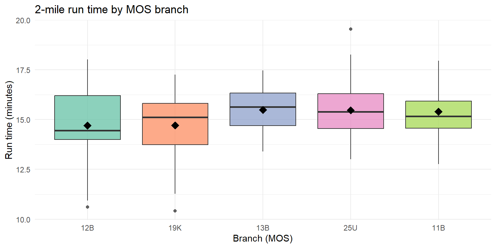
12B looks fastest, 11B slowest, with the other three branches in between. Does ANOVA agree that the gap is real?
Hypotheses:
- \(H_0:\ \mu_{12B} = \mu_{19K} = \mu_{13B} = \mu_{25U} = \mu_{11B}\)
- \(H_a:\) at least one branch mean differs
Fit the model:
mos_fit <- aov(run_time ~ branch, data = mos_data)
summary(mos_fit) Df Sum Sq Mean Sq F value Pr(>F)
branch 4 20.1 5.020 2.201 0.0718 .
Residuals 145 330.8 2.281
---
Signif. codes: 0 '***' 0.001 '**' 0.01 '*' 0.05 '.' 0.1 ' ' 1Read the table. With \(k = 5\) branches and \(N = 150\) Soldiers, df = (4, 145). The \(F\)-statistic is large and the p-value is far below \(0.05\), so we reject \(H_0\): mean 2-mile run time differs across branches.
Plot the F-statistic against the null distribution:
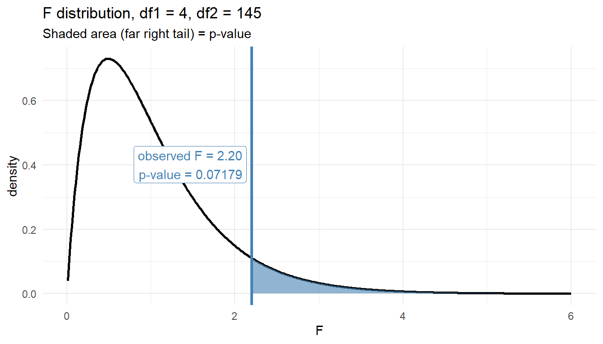
Our observed \(F\) sits far into the right tail of \(F_{4,145}\) – essentially no area remains beyond it, which is why the p-value is so small.
ANOVA does not tell us which pairs differ – the boxplot suggests 12B leads and 11B trails, but confirming specific pairwise gaps is a job for Tukey HSD in Lesson 38.
Board Problems
Problem 1: State the Hypotheses
A battalion S-3 wants to know if average time-to-qualify on the M4 differs across three companies (Alpha, Bravo, Charlie).
NoteQuestions
- Write \(H_0\) and \(H_a\).
- What are the degrees of freedom for the \(F\)-statistic if 15 soldiers are sampled from each company?
TipAnswers
\(H_0: \mu_A = \mu_B = \mu_C\) vs. \(H_a:\) at least one company mean differs.
\(k = 3\), \(N = 45\), so df = (2, 42): between \(= k - 1 = 2\), within \(= N - k = 42\).
Problem 2: Compute the F-Statistic
You’re given the following ANOVA table with missing values:
| Source | df | SS | MS | F |
|---|---|---|---|---|
| Branch | 2 | 24.0 | ? | ? |
| Error | 27 | 54.0 | ? | |
| Total | 29 | 78.0 |
NoteQuestions
- Compute \(MSTr\), \(MSE\), and \(F\).
- What is \(\eta^2\)?
TipAnswers
\(MSTr = 24/2 = \mathbf{12}\), \(MSE = 54/27 = \mathbf{2}\), \(F = 12/2 = \mathbf{6}\).
\(\eta^2 = 24/78 \approx \mathbf{0.308}\) – a large effect. Branch explains about 31% of the variability in the outcome.
Problem 3: Assumption Check
Group SDs for run times across four companies are: 0.9, 1.1, 1.2, and 2.8 minutes.
NoteQuestion
Is the equal-variance assumption reasonable? What should you do?
TipAnswer
No. Largest SD (\(2.8\)) is more than \(2\times\) smallest (\(0.9\)). Options:
- Transform the outcome (log, square-root) and recheck
- Investigate the outlier group – a big SD often means contamination or a different process
Problem 4: Interpret a Result
A company commander runs an ANOVA comparing marksmanship scores across three training methods. Output:
Df Sum Sq Mean Sq F value Pr(>F)
method 2 180 90.0 7.5 0.002
Residuals 42 504 12.0
Total 44 684
NoteQuestions
- State the conclusion at \(\alpha = 0.05\).
- What is \(\eta^2\), and what does it mean?
- What’s the next question the commander should ask?
TipAnswers
\(p = 0.002 < 0.05\): reject \(H_0\). There is strong evidence that mean marksmanship scores differ across at least one pair of training methods.
\(\eta^2 = 180/684 \approx \mathbf{0.263}\) – training method explains about 26% of variability in scores. Large effect.
Which methods differ? ANOVA only flags that some pair differs. Pairwise comparisons (Tukey HSD) in Lesson 38 tell you which.
Before You Leave
Today
- ANOVA compares \(\ge 3\) means with a single test at level \(\alpha\)
- The \(F\)-statistic is the ratio of between-group to within-group variability
- Always check assumptions and report an effect size with the \(p\)-value
- ANOVA tells you that groups differ, not which pairs
Any questions?
Next Lesson
Lesson 36: ANOVA I (continued)
- Continue one-way ANOVA
- Tech Report due today
Upcoming Graded Events
- Tech Report – Due Lesson 36
- Project Presentation – Lessons 39–40
- TEE – End of course